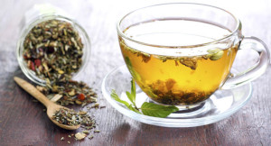

Ervas Medicinais
História das Ervas Medicinais
Registros arqueológicos provam que há milênios, diversos povos, principalmente os orientais, conheciam o poder das plantas medicinais como: substâncias aromáticas, óleos essenciais, remédios, venenos ou como expansoras de consciência, apurando os sentidos e provocando sensações diferentes daquelas conhecidas neste plano de realidade.
A civilização egípcia, à aproximadamente 4 mil anos, ficou conhecida como o berço da medicina, perfumaria e farmácia. Os egípcios utilizavam as ervas na religião, saúde e higiene, conheciam os efeitos das substâncias aromáticas no corpo e na psiquê. Os sacerdotes faziam suas preparações lendo fórmulas e entoando cânticos, enquanto os alunos misturavam os ingredientes.
Saúde Mental
Estudos científicos apontam dezenas de espécies de plantas medicinais com segurança e efetividade clínica, usadas no cuidado da depressão, ansiedade, insônia, entre outros transtornos. As plantas medicinais e fitoterápicos se tornam ainda mais importantes em um contexto de pandemia das doenças mentais.
A pesquisadora Bettina Ruppelt, farmacêutica industrial, professora de Fitoterapia da Universidade Federal Fluminense (UFF) e membro do Comitê de Produtos Naturais do Consórcio Acadêmico Brasileiro de Saúde Integrativa (CABSIN), tendo coordenado o Mapa Efetividade Clínica das Plantas Medicinais e Fitoterapia para Saúde Mental e Qualidade de Vida, realça que as pesquisas com plantas medicinais no cuidado e tratamento dos problemas de saúde mental vêm crescendo a cada dia e trazem importantes contribuições para a melhora da qualidade de vida da população e, consequentemente, a promoção do equilíbrio mental, como também para a redução do custo.
Benefícios das Ervas
A fitoterapia permite que o ser humano se reconecte com o ambiente, acessando o poder da natureza para ajudar o organismo a normalizar funções fisiológicas prejudicadas, restaurar a imunidade enfraquecida, promover a desintoxicação e o rejuvenescimento.
A natureza realmente fornece tudo que precisamos para viver bem, as plantas medicinais funcionam como remédios naturais muito benéficos que só têm a acrescentar no nosso organismo, e se destacam por suas propriedades calmantes, antidepressivas, diuréticas e anti-inflamatórias,entre outras.
Formas de Uso
O farmacêutico bioquímico, Dr. Décio Gomes de Oliveira, professor da Unoeste que desenvolve trabalhos e estudos com plantas medicinais, ressalta que são inúmeros os benefícios que as ervas oferecem, desde que utilizadas corretamente.
Consumir chás de folhas secas ou frescas, Oliveira destaca que as duas formas são benéficas, e essas plantas também podem ser utilizadas de outras formas, como para produção de unguentos (pomada), na aplicação de cataplasma (papa medicamentosa), além de banhos. “No banho, elas ajudam a relaxar e transcende o corpo físico, reorganizando a energia”, frisa Oliveira.